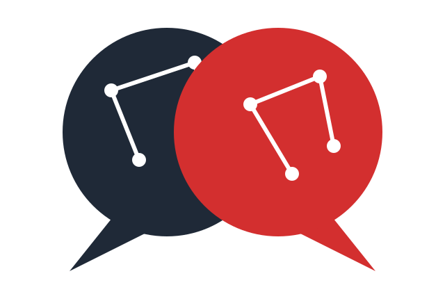

‹
›
Copilot活用ウェビナー 全3回・無料 第3回
最終回
／ 2026年7月26日（日）21:00〜21:40
作る・任せる——
自分専用AI
と、まるごと任せる自動化
Copilotは"使う"だけでなく、自分仕様に「作る」・まるごと「任せる」ところまで行けます。事前アンケート上位3テーマを、今日すべて回収します。
清水 幸久（Yukisa）
AI・ITよろず相談所
Google Meet 参加無料 各回40分

Copilot活用ウェビナー
第3回 ／ 2026.07.26
Review — 3回シリーズの振り返り
知る → 片付く →
作る・任せる
第1回
速い／じっくりの使い分け
重い作業ほど「じっくり」（Think Deeper）に切り替える
→
第2回
数字と文書が片付く
表を貼って要約・グラフ化、長文を目的別に要約・整形
→
第3回（今日）
作る・任せる
自分専用AIを作り、作業をまるごと任せて自動化する
最終回です。今日は
「作る」
と
「任せる」
——ここまで行きます。
Copilot活用ウェビナー
第3回 ／ 2026.07.26
Today's Goal — 到達宣言
今日、持ち帰れること
01
自分専用AIの正体が分かる
「指示＋資料を固定した相棒」——それが自分専用AIだと、具体的な作り方とセットで理解します。
02
会社版エージェントの作り方を持ち帰る
Agent Builderで社内資料に接地したエージェントを作り、チームに共有する流れが分かります（使えるかは情シス設定次第）。
03
「1回頼む」を超えて「使い回す」へ
Office Agentに作業を丸ごと任せ、その指示を別の月のファイルでも使い回して繰り返し作業を減らす流れを体験します。
今日は
作る
と
任せる
——Copilotの一番奥まで、一緒に行きます。
Copilot活用ウェビナー
第3回 ／ 2026.07.26
Environment Check — 環境確認コーナー（2分）
今日いちばん大事な前提——
環境で全然違います
同じCopilotでも、
「ノートブック」「エージェント」
が出る人・出ない人がいます
今日の主役｜ノートブック
2026年6月から追加ライセンス不要で職場・学校でも利用可＝対象が広い。それでも会社の設定で出ない場合はあるので、まず自分の画面を確認。
本格版｜エージェント
出る人・出ない人がはっきり分かれます。ある大企業では情シスがオフに。出ないのが普通と思ってください。
出る人・出ない人がいて当たり前です。「出ている人は真似する／出ていない人は"何を確認すればいいか"を持ち帰る」の二本立てで進めます。ご自分の画面はどうですか？——チャットで一言教えてください。
Copilot活用ウェビナー
第3回 ／ 2026.07.26
Main Message
「作る」と「任せる」——
4段はしごの3〜4段目
1
質問する
Chatに聞く（第1回）
2
モードを選ぶ
速い/じっくり（第1・2回）
3
自分のツールを作る
ノートブック／エージェント（今日）
4
任せる
Office Agentに丸ごと→指示を使い回す（今日）
30秒用語｜エージェント
指示＋資料を固定した自分専用AI
知らないと…今日の3〜4段目の話がまるごと理解できません
Copilot活用ウェビナー
第3回 ／ 2026.07.26
今日の地図｜3段ラダー
「作る」→「会社版」→「任せる」の
3段
で進みます
第1段
自分専用AIを「作る」
Copilot Notebooks（ノートブック）。参考資料＋手順を固定した相棒を生デモ。
ライブデモ
第2段
会社版ならもっと
Agent Builder＝OneDriveの社内資料に接地し、チームに共有できる会社版。生デモ。
ライブデモ
第3段
まるごと「任せる」
Office AgentにExcel作業を任せる→同じ指示を別の月でも使い回す。
ライブデモ
事前アンケート上位3テーマ——
自分専用AI（1位）・Excel（2位）・ルーチン自動化（3位）
——を、この3段ですべて回収します。
Copilot活用ウェビナー
第3回 ／ 2026.07.26
LIVE DEMO — 第1段
Copilot Notebooks（ノートブック）
「いつも参照する資料」を固定した
自分専用AI
を、その場で作ります
見どころ：資料を1回固定すれば、毎回ゼロから説明しなくてよくなる瞬間。
ノートブック
＝指示＋資料を固定できる作業机
2026年6月から追加ライセンス無しで職場・学校でも利用可。出ない場合は情シスに「Copilotノートブックは使えますか」と確認を。
Copilot活用ウェビナー
第3回 ／ 2026.07.26
Live Demo — 進行メモ
今、画面で何が起きているか
STEP 1
新しいノートブックを作る
ナビ「ノートブック」→「＋ 新しいノートブック」。名前例「社内ルールの相談係」。テーマごとの作業机を1個作るイメージです。
STEP 2 — ここが肝
参考資料を固定する
下部「参考資料」タブ／チャット欄の「＋」から社内ルールをファイルで追加。ここに置いた資料だけを見て答え、ネットの一般情報は使いません（最大300ファイル）。
STEP 3
役割を固定する
上部「Copilotの手順を追加する」に「何を見て、どう答えるか」を入力。これが背骨です（プロンプト集参照）。
一度作れば、次からは
このノートブックを開くだけ
で「社内ルールの相談係」が起動します。これが自分専用AIです。
ONE STEP DEEPER
一段深く
中級の設計原則：AIに「わからない」と言わせる
STEP3の役割指示文に、
「資料に無いことは推測せず『◯◯に確認』と答えて」
の一文を入れるだけで、ハルシネーション（もっともらしい誤答）が大きく減ります。自分専用AIの品質は、賢い言い回しよりも
この“逃げ道”の設計
で決まります。
Copilot活用ウェビナー
第3回 ／ 2026.07.26
Wrap-up — 第1段
質問してみると——
こう答えます
質問例
有給って何日前までに申請すればいい？
在宅勤務の日に必要な手続きは？
ソースの社内ルールに基づいた回答。記載が無いことは「総務にご確認を」と誘導。
事前アンケート
自分専用AI＝1位（5票）
最も見たいと回答されたテーマに、正面から応えました。
参考資料の追加が詰まった場合は、事前に作成済みのノートブックを開いて代替します。
Copilot活用ウェビナー
第3回 ／ 2026.07.26
ONE STEP DEEPER
一段深く
プロンプト職人より、
コンテキスト設計者
うまい一文（プロンプト）を磨く時代から、
AIに何を読ませるか（コンテキスト）を設計する時代
へ。さっきの「ノートブック」は、その入口です。
「固定化」がノートブック／エージェントの本質
毎回チャットに貼っていた前提資料・指示を、
1回だけ設定して固定する
——それだけです。属人的だった“職人芸”が、開いた瞬間に誰でも使えるチーム資産に変わります。
「AIの答えがイマイチ」の正体
原因の多くは、プロンプトの下手さではありません。
読ませるべき資料を渡していない
ことです。うまい言い回しを探すより、先に「何を読ませるか」を疑ってみてください。
Copilot活用ウェビナー
第3回 ／ 2026.07.26
今日の地図｜3段ラダー（再掲）
第1段が終わりました。次は
第2段
第1段（完了）
自分専用AIを「作る」
Copilot Notebooks（ノートブック）で生デモ完了。
第2段 — 今ここ
会社版ならもっと
Agent Builder＝OneDriveの社内資料に接地し、チームに共有できる会社版。生デモ。
ライブデモ
第3段
まるごと「任せる」
Office AgentにExcel作業を任せる→指示を使い回す。
Copilot活用ウェビナー
第3回 ／ 2026.07.26
LIVE DEMO — 第2段
Agent Builder（会社版）
会社版になると、
これがもっと強くなる——
Agent Builder
見どころ：作り方はNotebooksとそっくり（指示＋資料）。違いは
できあがったものが「開いて使う場所」ではなく、Copilotから呼び出せる「相棒」になる
こと。
エージェント
＝いつものCopilotから名前で呼び出せる、配布できる自分専用AI
正直にお伝えすると：この機能、
出る人と出ない人がいます
。私は使えるようになりましたが、皆さんは情シスの設定次第です。
Copilot活用ウェビナー
第3回 ／ 2026.07.26
Live Demo — 進行メモ（第2段）
作って、
OneDriveに接地して、配る
STEP 1
エージェントを作る
「エージェント」→「新しいエージェント」。名前「就業ルールBot」、指示欄にNotebooksと同じ役割文を貼る。ノーコードです。
STEP 2
資料に接地する
チャット欄「＋」→クラウドファイル→OneDriveの社内ルールを選択。エージェントはSharePointのサイトやフォルダごと、まるごと接地することもできます。
STEP 3 — 会社版の価値
同僚に配る
プレビューで動作確認→「…」→「共有」。受け取った人は設定を触らず、いつものCopilotから名前を呼ぶだけで使えます。
ノートブックとの違いは「置き場所」ではなく、
使われ方
です
使い方
ノートブック：そのノートを開いて、中で作業する
いつものCopilotから名前で呼び出す
できること
ノートブック：入れた資料に基づいて答える
Web検索・データ分析・画像生成の能力も持たせられる
配ったあと
ノートブック：中身を一緒に触る共同作業スペース
完成品として配布。直すのは作った人だけ
Copilot活用ウェビナー
第3回 ／ 2026.07.26
「自分専用AI」の正確な前提
Agent Builderが
使えるかどうかの3段階
1
無料のCopilot Chatのみ
簡易なエージェントは作れるが、接地できるのは「指示＋公開Web情報」まで。社内データには繋げません。
2
有料 Microsoft 365 Copilotライセンス
SharePoint等の社内データに接地したエージェントが作れます（従量課金でも可）。
3
管理者がオフにしている場合
ライセンスに関わらず、メニューにエージェント作成が出ません。大企業テナントに多いパターンです。
断定はしません——「使えるはず」ではなく、まずご自分の画面に出るか確認を。無ければ
情シスに「Agent Builderは使えますか」
と聞くのが第一歩です。
Copilot活用ウェビナー
第3回 ／ 2026.07.26
今日の地図｜3段ラダー（再掲）
ここからは
最後の第3段——「任せる」
第1段（完了）
自分専用AIを「作る」
Copilot Notebooks（ノートブック）で生デモ完了。
第2段（完了）
会社版ならもっと
Agent BuilderでOneDrive接地＋チーム共有まで生デモ完了。
第3段 — 今ここ
まるごと「任せる」
Office AgentにExcel作業を任せる→同じ指示を別の月でも使い回す。
ライブデモ
この回の華——Excel（2位）＋ルーチン自動化（3位）を、1つのデモで合体して回収します。
Copilot活用ウェビナー
第3回 ／ 2026.07.26
LIVE DEMO — 第3段
Office Agent
Excelの作業を
まるごとお願い
してみます
見どころ：頼んだのは日本語一言だけ。Excelを開いて関数を書く作業を、丸ごと肩代わりしてくれる瞬間。
正直にお伝えすると：動作が重ければ、生成済みの完成物をスクショで代替します。
Copilot活用ウェビナー
第3回 ／ 2026.07.26
手順A — Excel作業を「任せる」（約6分）
売上データを渡して、
サマリーを一発生成
STEP 1
新しいタスクを作る
Office Agent（stride.microsoft.com）で「新しいタスク」を開始します。
STEP 2
売上Excelを渡して指示
この売上データ（添付）を読んで、①今月の要点3つ ②先月比 ③来月の注意点、を1枚のサマリーにまとめて。数字はデータにあるものだけ使い、無い項目は「データなし」と書いて。
STEP 3
サマリーが自動生成
表を読み取り、要点つきのサマリーが自動生成される。
これが「任せる」。第2回でやった「自分でCopilotに頼む」の、さらに一歩先です。
Copilot活用ウェビナー
第3回 ／ 2026.07.26
手順B — 同じ指示を、別の月でもう一度（約4分）
一度うまくいった指示は、
使い回せる
STEP 1
別の月のファイルを渡す
新しいタスクで、今度は7〜9月の売上ファイルを添付します。
STEP 2
さっきと同じ指示を貼る
一字も変えません。手順Aで使った指示文を、そのままコピペします。
STEP 3
新しいサマリーが出る
今度は店舗Bの落ち込みを指摘してくる。
毎月ゼロから考え直す必要はありません。
指示は1回作れば、あとはファイルを差し替えるだけ
。これが繰り返し作業の一番現実的な減らし方です。
ONE STEP DEEPER
一段深く
うまくいったプロンプトは資産
1回成功した指示は使い捨てにせず、
メモに残して使い回す
のが中級の運用です。“いい指示を書ける”人より、
“いい指示を貯められる”人
が強い。
さらにこの先、指示を登録して
スケジュールで完全自動実行する「ワークフロー」機能
も来ています（現在は英語・米国から先行提供。日本語環境はこれから）。
Copilot活用ウェビナー
第3回 ／ 2026.07.26
背骨の再確認
任せられる時代だからこそ——
最終確認は人間
著作権・数字の裏取り
生成された文章・数字・固有名詞・日付は、必ず人間が裏取りしてください。自動化されても、最終責任は人にあります。
セキュリティ：入れていいデータは会社ルール
社内データをノートブックやエージェント、Office Agentに入れていいかは、必ずご自分の会社のルールに従ってください。
①優秀な新人
出力は叩き台
②速い/じっくり
重い作業は切替
③ハルシネーション
最終確認は人間
④セキュリティ
会社ルールに従う
Copilot活用ウェビナー
第3回 ／ 2026.07.26
Series Summary — 3回シリーズ総まとめ
知る → 片付く →
作る・任せる
第1回
知る
速い／じっくりの使い分け——
重い作業ほど「じっくり」
に切り替える
第2回
片付く
Excel・Wordが自然言語で
"使える素材"
に変わる
第3回
作る・任せる
自分専用AI（ノートブック／エージェント）を作り、Office Agentで
丸ごと任せて自動化
去年「使えない」と感じたCopilotは、もう別物。
1ヶ月で周りと差がつき、半年で別人のように
速くなります。
Copilot活用ウェビナー
第3回 ／ 2026.07.26
Takeaways — 到達宣言の回収
今日の
5つの持ち帰り
01
自分専用AI＝
「指示＋資料を固定した相棒」
だと分かった
02
Copilotの
「ノートブック」
で、その場で自分専用AIを作れる（追加ライセンス不要になり対象拡大）
03
Agent Builderで
会社版エージェントを作り、社内資料に接地してチームに共有
できると分かった
04
Office Agentに
「1回頼む」
だけで作業が丸ごと片付く
05
1回成功した指示は
貯めて使い回す
——繰り返し作業はファイルを差し替えるだけになる
①自分専用AIの正体 ②Agent Builderで会社版エージェントを作り共有できること ③1回の指示を使い回して繰り返し作業を減らせること——
3つとも到達しました
。
Copilot活用ウェビナー
第3回 ／ 2026.07.26
Next Step — シリーズの後で
「自分の仕事でやってみたい」
その一歩を、隣で
3回で「知る → 片付く →
作る・任せる
」を体験しました。次は
あなたの実際の仕事
で動かす番です。
X
X（@Yorozu0519）でほぼ毎日発信中
：今日からできるAIの小ネタ・最新情報をいちばん早くお届け。まずは
フォロー
を！
無料相談
：「自分の業務だと何から？」を一緒に整理します。Webの無料相談ボタンから。
Note連載
：「AI活用マガジン」で、じっくり読める解説を継続発信。
3回分の資料・録画
：アンケート記入者へまとめてお送りします。
しつこい営業は一切ありません。「もう少し相談したい」方だけ、お気軽にどうぞ。
Copilot活用ウェビナー
第3回 ／ 2026.07.26
Thank You — 最後にお願いです
アンケートで
3回分の資料・録画リンク
をお受け取りください
3回シリーズ、お付き合いいただきありがとうございました。
1分のアンケート
にご記入いただいた方へ、
第1〜3回のスライド資料
と
録画リンク
を
後日メールでお送りします。
チャット欄のURLからご記入ください（所要1分）
記入された方限定で3回分の資料・録画をお届けします
https://forms.gle/f3rqP3BwEqQzu9qF7
「自分の仕事でも試したい」方は
無料相談
もお気軽に。X（@Yorozu0519）・Noteでも発信中です。
スマホのカメラで読み取り
または チャット欄のURLから
← → キーで移動 ／ F でフルスクリーン